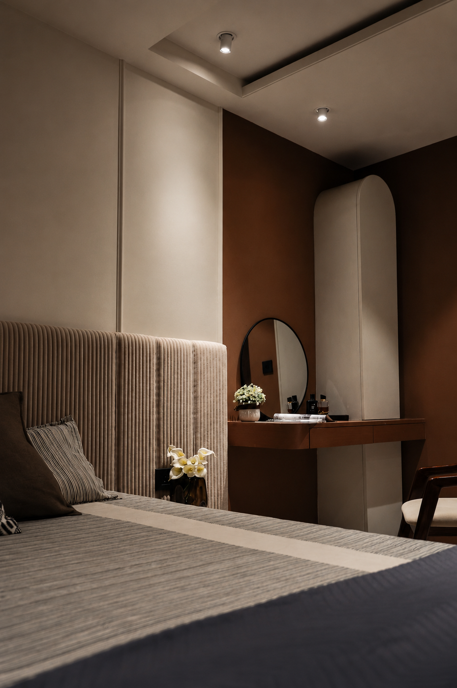

Every story begins with the people who inhabit it. By understanding their lives, aspirations and the purpose of a place, we create environments that feel deeply personal, timeless and distinctly their own.

Leadership needs somewhere to think clearly. This room gives it, holding privacy and openness in the same frame without ever choosing between them.

Built as much for the conversation that changes a decision as for the hours of focus that follow it.
.webp)
Curved walls and a continuous line of light give a private office its authority, without a single hard edge.

An open floor planned so people can gather or concentrate by choice, and the room reads the same at nine in the morning as it does at six.
.webp)
The room a visitor meets first. It sets the tone before anyone has said a word.
.webp)
A forgotten corner turned into a working utility space. Proof that nothing in a plan is too small to deserve intention.

A hand-chosen mural lifts the eye to a bird mid-flight, so the first thing the morning offers is a little height.
.webp)
A dressing corner in warm timber, proportioned so the smallest daily routine feels unhurried.

A room that lowers your shoulders as you enter it, and asks nothing of you once you are inside.

A reading corner for the slower end of the day, lit for lingering rather than for getting things done.

A child’s room where the walls carry a little wonder, made for rest and for the imagining that comes before sleep.

Every morning begins here, where soft light meets warm timber and the simplest moments become the most cherished.